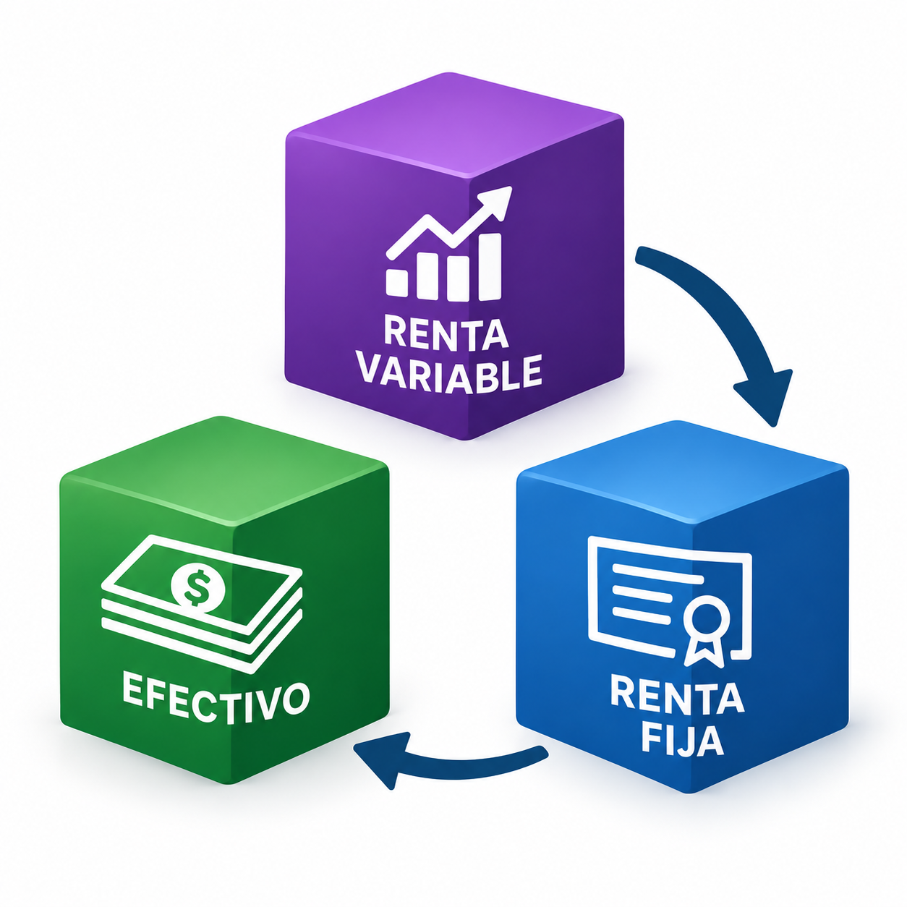
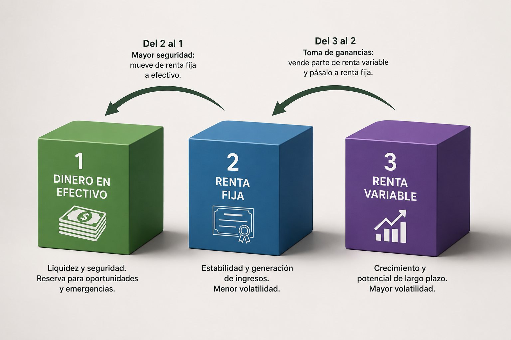

Configuración
Parámetros de entrada
Define el escenario que quieres analizar.
Salida del escenario
Resultados
Evolución mensual
Gráficas
Cubo 1 y Cubo 2
Cubo 3

Herramienta de planificación financieraProyecta la evolución de tu liquidez, renta fija y renta variable con una simulación mensual clara y configurable.
El modelo organiza el patrimonio en tres niveles de disponibilidad:
La simulación aplica inflación, rentabilidades anuales y rebalanceos automáticos para mostrar cuánto dura cada reserva.

Define el escenario que quieres analizar.